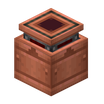
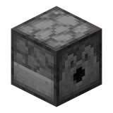

CREATE CODEX
机械动力图鉴
标签
源码
首页
/
标签
/ 动态结构可控

#动态结构可控
create:contraption_controlled
标签
成员
23
移动式流体接口
动力钻头
动力锯
机械手
移动式存储接口
接触式红石信号发生器
动力收割机
动力犁
动力压路机
安山漏斗
黄铜漏斗
奇异钟
缠魂钟
安山门
黄铜门
铜门
列车门
边框玻璃门
钟
营火
灵魂营火

发射器
投掷器
用到它的 Create 配方
本站收录的 Create 配方里没有用到它。